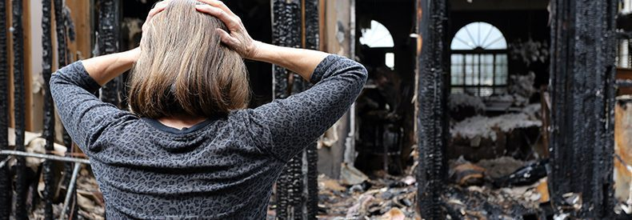

Un incendio en una casa puede ser una de las cosas más traumáticas que le puedan pasar a usted y su familia; e incluso un pequeño incendio puede causar grandes daños a sus muebles y pertenencias. La mejor manera de que su casa y su familia vuelvan a la normalidad es limpiar su hogar lo más rápido posible, realizando un Limpieza de Incendios. Tenga en cuenta que es posible que deba esperar la autorización del jefe de bomberos para volver a ingresar a su casa, dependiendo de la extensión del incendio.
Lo primero que debe hacer es comunicarse con su agente de seguros, si tiene uno. Ellos están ahí para ayudarlo a través del proceso y ponerlo en contacto con otros profesionales para ayudarlo. Si alquila su propiedad, comuníquese con el propietario lo antes posible.

Sus alfombras, cortinas, muebles tapizados y ropa generalmente se pueden recuperar y limpiar, a menos que haya daños considerables por agua u hollín. Un limpiador de incendios profesional podrá decirle qué se puede salvar y qué no. Pueden ayudarlo no solo con sus artículos dañados y quemados por el fuego, sino que también podrán limpiar todos los artículos dañados por el humo.
Existen diferentes procedimientos de limpieza de incendios y limpieza para diferentes tipos de daños por humo y fuego, por lo que es esencial contar con un profesional que lo ayude.
A veces, un intento de limpiar y limpiar el contenido por su cuenta puede causar daños adicionales si no conoce el procedimiento adecuado. Aquí hay una lista de acciones que puede tomar de inmediato para minimizar daños y olores adicionales:
- Abra todas las ventanas para ventilar.
- Seque las alfombras y muebles mojados inmediatamente para evitar la formación de moho. Utilice ventiladores y deshumidificadores para absorber el exceso de agua y humedad. Esto puede llevar varios días o incluso semanas.
- Evite las manchas de óxido colocando bloques de madera entre las patas de los muebles y las alfombras mojadas.
- Cambie el filtro de su horno al menos una vez al día hasta que todo el hollín visible desaparezca del filtro.
- Cubra los artículos limpios y no dañados con un paño o una cubierta de plástico para evitar daños durante la limpieza.
- La ropa dañada se puede limpiar con su lavadora. Considere colgarlos para que se sequen para que pueda ventilarlos.
Para aquellos artículos que no se pueden limpiar, su compañía de seguros debe reemplazarlos. Si su agente de seguros no le proporciona una empresa de limpieza de incendios, puede encontrar una por su cuenta. Internet es un buen lugar para comenzar. Investigue, elija una empresa de renombre y solicite referencias.